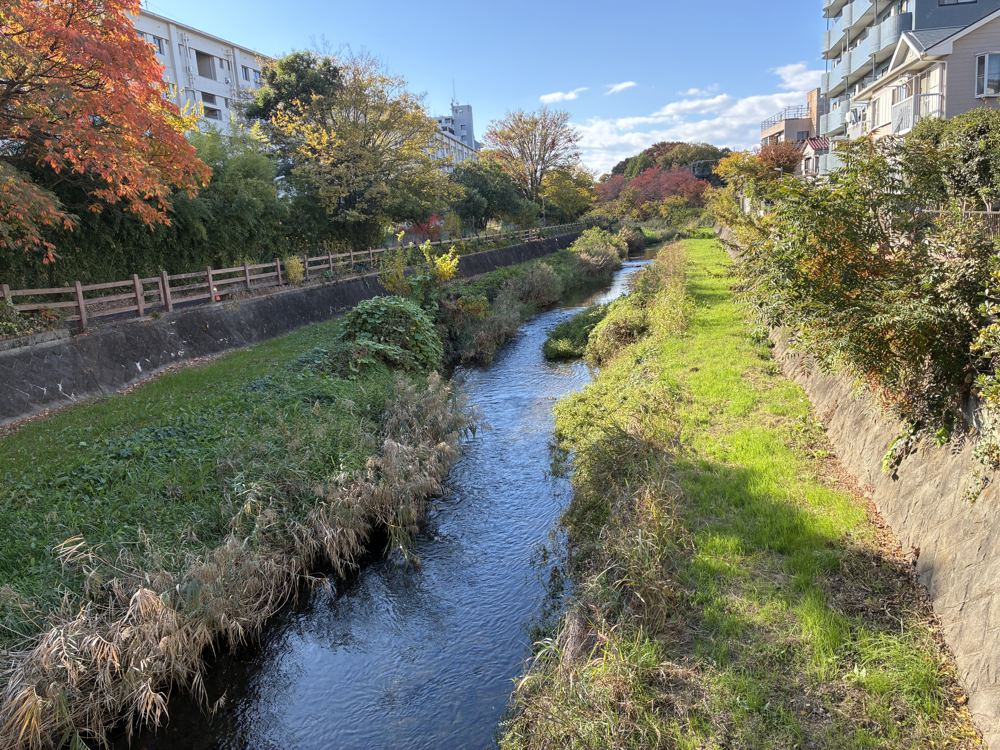

Tokyo in November: When the Nights Turn Cold, and a Riverside Bath Starts to Make Sense
Every year it happens the same way. Sometime in the first week of November, a guest on one of my afternoon walks will stop, pull their jacket a little tighter, and say some version of "I wasn't expecting it to get this cold this fast." They're not wrong — Tokyo doesn't ease into winter so much as flip a switch, usually right around the time the maples finally commit to turning. And every year, it's the same month that quietly becomes my busiest for one specific tour: the one that ends in a bath.
I live here year-round, so I feel the shift before most visitors do. The vending machines swap their cold-drink rows for hot canned coffee sometime in late October, the convenience stores start pushing oden by the register, and by the second week of November the evening air has a bite that wasn't there the week before. It's a good month. It's just a month that rewards knowing what to do with it.
The weather, honestly
Expect daytime highs in the mid-teens°C easing toward single digits by the end of the month, with mornings and evenings noticeably colder than the daytime suggests. Rain is rare and skies are usually clear — this is one of Tokyo's driest stretches — but the temperature swing between a sunny early afternoon and a 5pm sunset can catch people off guard. Layers that you can add and remove beat one heavy coat, and I'd pack a scarf before I'd pack an umbrella.
Why November is actually peak koyo season here
Most visitors assume autumn leaves peak in October, because that's when the calendar says "fall." In the Tokyo lowlands and the hills just west of the city, it's usually closer to the truth to say autumn color peaks in late November into early December — the maples along the Kurome River and around Heirinji's temple grounds are often still green in mid-October and don't really turn until the air has had three or four proper cold snaps. If you're planning a trip around "autumn in Tokyo," November is, more often than not, the better bet than October.

This week's featured walk, and why November is its month
This week I'm featuring the Ultimate Spa Japon Retreat & Kurome River Stroll, and honestly it's the one tour on my roster that gets noticeably better as the temperature drops. In August it's a pleasant river walk. By November it's a genuinely good idea — thirty minutes along a spring-fed river under maples that are finally turning, ending at one of the largest bath complexes in the Tokyo area. You walk in cold and walk out loose-shouldered and warm, which is not something I can say about most of my other tours this time of year.
It's also the month I notice guests linger longest at the bath afterward. There's a very specific kind of quiet that sets in once the cold has actually gotten into your hands and the hot water finally reaches them — guests who were checking their phones on the walk over tend to put them away entirely once we're inside. It's the same ritual Tokyo locals have been using to survive the cold for a very long time, and it works just as well on a visitor as it does on someone who's lived here forty years.
What else is worth knowing about November
Tokyo's big autumn illumination displays — the ones that light up Marunouchi, Roppongi and a handful of other districts — mostly switch on in the second half of November, so if nighttime illuminations are on your list, aim for the back half of the month rather than the front. Late November also overlaps with peak koyo viewing at the bigger-name spots like Rikugien and the Imperial Palace moat, which means those locations get genuinely crowded on weekends — one more reason a quieter, less-publicized river walk like this one is worth having on the itinerary alongside the famous names, not instead of a day trip into the city center.
One practical note: because the cold catches people off guard, this is the month I get the most last-minute "can I bring a warmer jacket, is that okay" messages. The honest answer is always yes — layer up, and if you're coming straight from a warmer climate, don't trust what the daytime forecast tells you about how 5pm is going to feel.
This week's featured walk: built for exactly this weather
Ultimate Spa Japon Retreat & Kurome River Stroll — small group (max 3), English-guided, bath entry included.
Check dates & book →Chasing the autumn colors elsewhere too?
If you're building out a few days around peak koyo, a Mt. Fuji, Lake Kawaguchiko & Oshino Hakkai day tour pairs well with a quieter, bath-ended afternoon like ours — or browse other Tokyo experiences to round out the rest of the trip.
Some links on this page are affiliate links — booking through them supports this site at no extra cost to you.